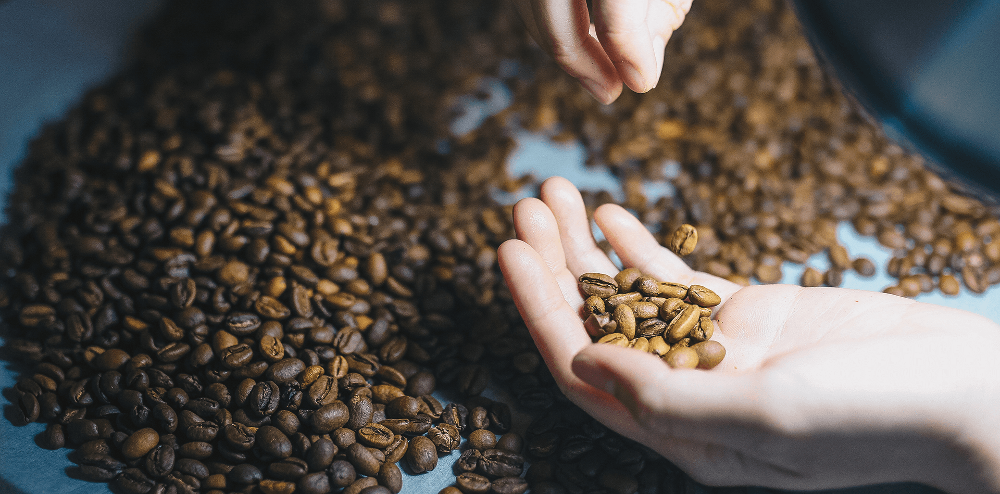

|  |
Segun la SCA (Specialty Coffee Asociation) define el termino Speacialty Coffee como un término que engloba una categoría de café de alta calidad, caracterizado por su excepcional sabor, aroma y perfil sensorial. Se diferencia del café comercial por su cuidadosa selección de granos, prácticas sostenibles de cultivo, procesamiento meticuloso y tostado artesanal. "El café de especialidad no es solo una categoría dentro de un protocolo establecido,
para nosotros es un producto que promueve unos valores |
|
El tostador de café de especialidad juega un papel muy importante en la cadena de producción del café. Es el punto de unión entre los importadores o cooperativas que tratan con el producto en origen y las cafeterías que tratan con el destinatario final. Su labor principal es seleccionar cafés de entre las variedades que ofrecen los importadores/cooperativas y tostar cada uno de ellos de manera precisa para extraer lo mejor de cada café. Como decíamos antes, el trabajo del tostador es potenciar la materia prima que le llega a través del tueste."El café de especialidad,no es solo un café delicioso, sino también un café ético. Se tiene en cuenta a todas las personas involucradas en la cadena de producción y se procura que reciban un pago justo que les permita una vida digna." Inffable Coffee Roasters, uno de los mayores tostadores de cafe de especialidad de la provincia de Sevilla, ubicados en el termino municipal de Dos Hermanas. |